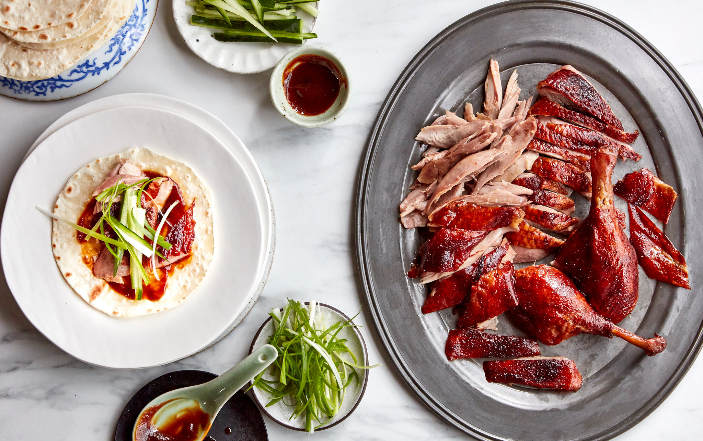

Biryani
Biryani is a mixed rice dish, mainly popular in South Asia. It is made with rice, some type of meat and spices. To cater to vegetarians, in some cases, it is prepared by substituting vegetables or paneer for the meat. Sometimes eggs and/or potatoes are also added.

Dim-sum
Dim sum is a large range of small Chinese dishes that are traditionally enjoyed in restaurants for brunch, with a “selection of over 1,000 varieties of small-plate Chinese foods, usually meat or vegetables in dough or a wrapper that is steamed, deep-fried or pan-fried.”
Ramin
Ramen is a Japanese noodle dish. It consists of Chinese-style wheat noodles served in a broth; common flavors are soy sauce and miso, with typical toppings including sliced pork, nori, menma, and scallions. Ramen has its roots in Chinese noodle dishes and is a part of Japanese Chinese cuisine.

Sushi
Sushi is a Japanese dish of prepared vinegared rice, usually with some sugar and salt, plus a variety of ingredients, such as vegetables, and any meat, but most commonly seafood. Styles of sushi and its presentation vary widely, but the one key ingredient is "sushi rice", also referred to as shari, or sumeshi.
Hainanese chicken rice
Hainanese chicken rice is a dish of poached chicken and seasoned rice, served with chilli sauce and usually with cucumber garnishes. It was created by immigrants from Hainan in southern China and adapted from the Hainanese dishes of Wenchang chicken and Wenchang chicken rice.
Pad-Thai
Pad Thai, phat Thai, or phad Thai, is a stir-fried rice noodle dish commonly served as a street food in Thailand as part of the country's cuisine. As Thailand's national dish, it is typically made with rice noodles, shrimp, peanuts, scrambled egg and bean sprouts. The ingredients are fried in a wok.

Chả giò
Pad Thai, phat Thai, or phad Thai, is a stir-fried rice noodle dish commonly served as a street food in Thailand as part of the country's cuisine. As Thailand's national dish, it is typically made with rice noodles, shrimp, peanuts, scrambled egg and bean sprouts. The ingredients are fried in a wok.
Peking duck
Peking duck is a dish from Beijing that has been prepared since the Imperial era. The meat is characterized by its thin, crispy skin, with authentic versions of the dish serving mostly the skin and little meat, sliced in front of the diners by the cook.
Kung Pao chicken
Kung Pao chicken, also transcribed Gong Bao or Kung Po, is a spicy, stir-fried Chinese dish made with cubes of chicken, peanuts, vegetables and chili peppers and Sichuan peppercorns.